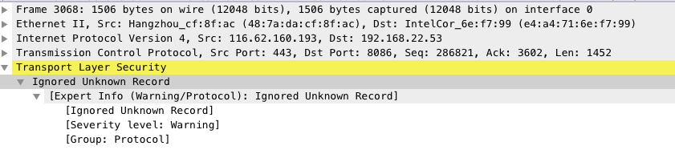

网路
本章节主要讲的是一个完整的HTTPS请求的一生
HTTPS请求
当你在浏览器中输入https://www.baidu.com时,发生了那些事
浏览器不知道www.baidu.com在哪个服务器上,所以通过DNS协议获取了www.baidu.com对应的ip地址 (Q: DNS除了查询IP地址还能做什么?)

- 知道IP地址之后,还需要知道MAC地址才能建立链接,这时使用ARP协议查找对应服务器的MAC地址

- 这时通过TCP/IP协议 三次握手建立链接

- TCP建立链接后, 由于是HTTPS请求, 还需要SSL/TLS协议四次握手建立链接

- 上面都通过后, 最后使用HTTP协议, 在建立好的通道中传输数据

以上就是一个简洁版的HTTPS请求建立链接的过程
每个过程👇的配图是通过Wireshark截获的对应协议的数据包, 从中可以看到每个协议的数据包发送出来都经过了哪些协议的封装, 例如: 👇这个HTTP数据包

从图中可以看到, 要解析这个数据包先要经过 以太网 -> IP -> TCP -> HTTP (Q: 通过看图,你能知道DNS协议是用的什么传输协议吗?) 可以自行下载Wireshark来查看具体协议里面的详情,也可以等我之后慢慢写.